☠ Sobre mim ☠
†彡 oi!! meu nome é Yuki e eu sou emo (sim, ainda existe emo e NÃO, ñ é fase!!). vivo de MCR no repeat, filme do Tim Burton, Halloween o ano inteiro, terror, creepypasta e tudo q tem clima sombrio... mas tb sou fraco por fofura, Kuromi e Cinnamoroll mandam em mim <3 彡†
meus pronomes são they/them e he/him, sou não-binário e demissexual. ouço kpop tb (BTS é vida, Yoongi é tudo). aqui é o meu cantinho, onde eu largo tudo q eu amo e escrevo uns blogs sem ter q explicar nada pra ngm ò_ó
†･ﾟ✧ "ñ é uma fase, mãe" ✧ﾟ･†
✖ Meu fotolog ✖
fotos novas no fotolog!! (a maquiagem, o cabelo, tudo no capricho) ♥ comenta aí, ñ custa nada...
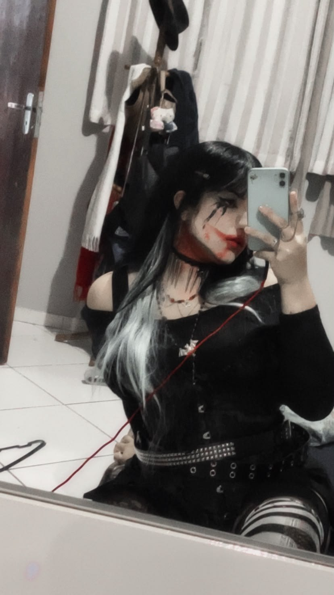
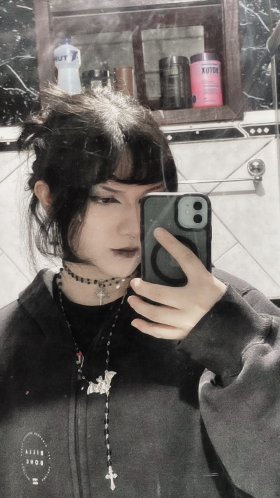
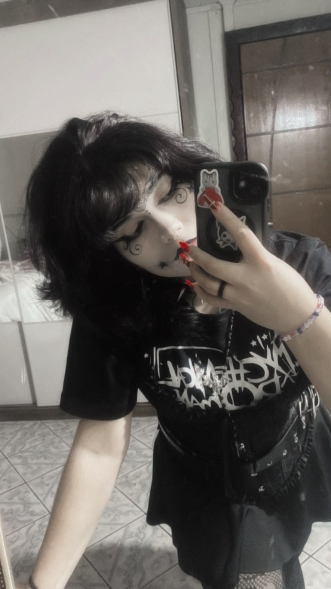
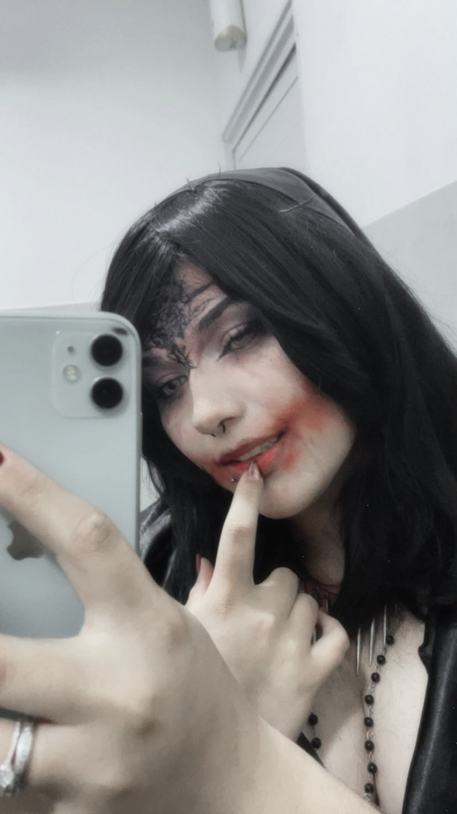
<3 Blog: meu futuro namoradinho <3
gente... senta q lá vem textão </3 (ñ é de tristeza, calma kkkk). eu saí com uma pessoa especial pela primeira vez e foi MUITO bom. tipo, mto mesmo!! foi só um encontro até agora, mas eu voltei pra casa com o coração quentinho e sorrindo igual bobo.
confesso q fiquei todo envergonhadinho kkkkk. mão suando, voz baixinha, rindo de nervoso... e mesmo assim a gnt conversou, riu de tudo e em nenhum momento ficou estranho. isso me deixou mto tranquilo.
e a melhor parte: a gnt já decidiu q vai se ver de novo, e de novo, e de novo!! foi tão bom q ñ tinha como ser diferente. como sou demissexual, as coisas comigo vão devagarinho, então ainda ñ rolou beijo nem nada, e tá tudo ótimo assim. ñ tenho pressa nenhuma, tô curtindo cada pedacinho <3
ñ vou ficar prevendo o futuro (*toc toc toc na madeira*), mas tá tudo indo mto bem e eu tô mto feliz. quem sabe, com o tempo, esse "futuro namoradinho" vira só "namoradinho" ♥ (shhhh, ñ conta pra ngm!!)
as fotos do nosso primeiro encontro (até agora o único, mas ñ por mto tempo), ñ resisti ♥
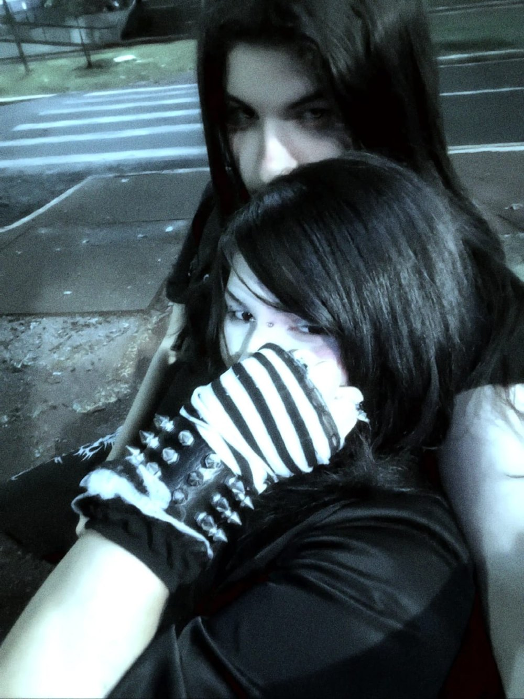
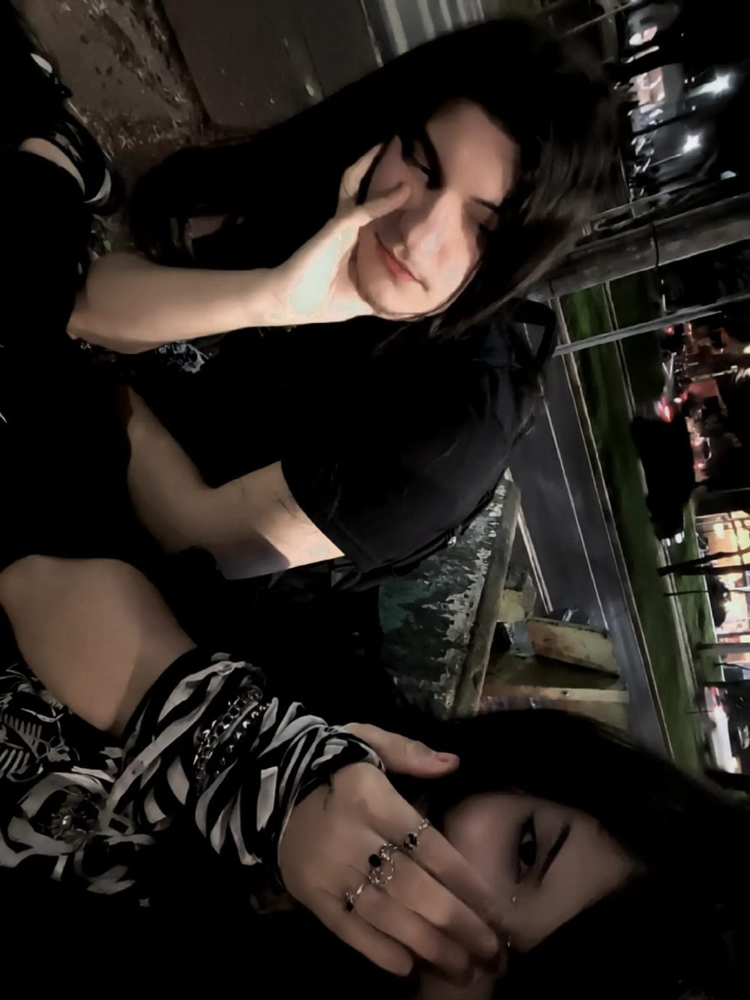
☠ Blog: Welcome to the Black Parade ☠
gente, preciso falar de MCR de novo (é, de novo, ñ aguento ficar quieto kkkk). é a banda da minha vida e ponto. tem música q começa a tocar e já bate aquele nó na garganta, aí eu aumento o volume e canto errado de propósito pq ninguém tá olhando \m/
Helena e I'm Not Okay (I Promise) são as primeiras q eu coloco quando alguém pergunta "o q vc ouve?". Teenagers é pra gritar no quarto, e Welcome to the Black Parade me arrepia TODA vez, nem adianta. o The Black Parade inteiro é perfeito, pronto, falei. e quando eles voltaram em 2019 eu quase chorei de felicidade (a MCRmy inteira surtou, eu incluso).
ñ importa o dia q eu tô tendo: se tocar MCR, eu melhoro. ñ é fase, é a minha trilha sonora!!
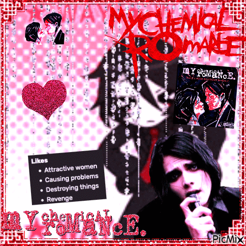
fiz (ok, achei) esse mix e me apaixonei x_x ~*~☾ Blog: Halloween o ano inteiro ☾
☠ faltam uns dias pro Halloween ☠ (olha o contador ali do lado ->) e eu já tô ansioso kkkk. Halloween é o meu dia favorito do ano, ñ tem competição. queria q fosse o ano inteiro: abóbora na janela, luz baixinha, filme de terror e doce até passar mal.
e como ñ falar do Tim Burton nessa época?? Edward Mãos de Tesoura, A Noiva Cadáver, Beetlejuice... o jeito dele de fazer o sombrio parecer fofo é exatamente o q eu amo. mas o coração é todo do Estranho Mundo de Jack ♥ (o Tim Burton só criou a ideia e produziu, quem dirigiu foi o Henry Selick, mas pra mim é tudo Tim Burton kkkk).
o Jack Skellington é o meu rei: Rei das Abóboras, magrelo, elegante, e com aquela carinha de quem tá sempre aprontando alguma. e o Zero??? aquele cachorrinho fantasma com nariz de abóbora, ñ aguento!! tô quase pedindo um desses de presente. "This Is Halloween" toca na minha cabeça o ano todo.
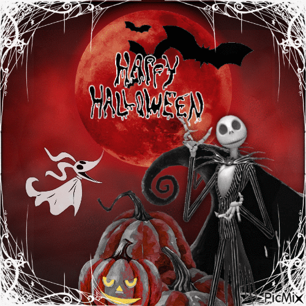
happy halloween (todo dia, ñ só no dia 31) ☾♥ Blog: Kuromi & Cinnamoroll ♥
sim, emo ama fofura e daí?? ò_ó a Kuromi e o Cinnamoroll são os meus bebês e eu defendo os dois até a morte (da fofura, calma kkk).
☠ Kuromi: a travessa mais linda do mundo. capuz preto, caveirinha rosa, rabinho de diabinho... e ainda faz aniversário no Halloween (31/10), ñ tinha como ñ ser a minha cara!! toda vez q eu vejo ela de bobinha armando alguma, eu derreto.
♥ Cinnamoroll: o cachorrinho branquinho de orelhonas q fazem ele voar... é impossível ficar de mau humor olhando pra ele. é o meu lado fofo em forma de rolinho de canela <3
juntos eles são o meu equilíbrio: uma travessa e o outro docinho. por isso os dois moram no site inteiro ^-^
♠ Blog: Alastor & Jax, meus xodós ♠
☠ Alastor: como ñ amar um demônio do rádio, sorrisão no rosto, educadíssimo e perigosíssimo ao mesmo tempo?? Hazbin Hotel me ganhou por causa dele: o jeito de falar, a estática aparecendo do nada, o charme todo. eu faço questão de rir de cada cena dele kkkk
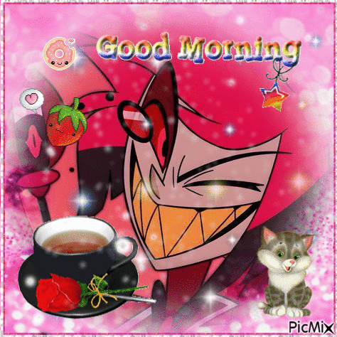
o Alastor desejando bom dia (ele é um fofo, ñ liga pro que dizem) *-*♠ Jax: o coelho roxo mais chato e mais carismático do Circo Digital. implica com todo mundo e é impossível ñ gostar dele (eu tentei, ñ consegui). e quando ele morreu eu CHOREI, chorei litros, ñ superei até hoje </3 ñ quero falar sobre isso T_T
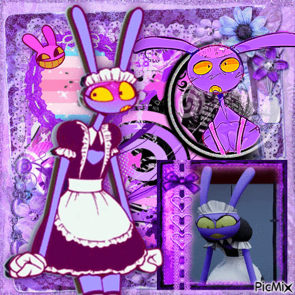
jax de maid dress, o melhor mix q eu já vi ~*~♠ Blog: creepypastas & terror ♠
creepypasta foi a minha infância (devia tá dormindo e tava lendo isso kkkk). Slender Man, Jeff the Killer, BEN Drowned, Candle Cove... eu lia tudo morrendo de medo e ñ conseguia parar. até hoje eu releio várias.
mas o meu preferido sempre foi o Laughing Jack. aquele palhaço preto e branco, de listras e dentão, q chama as crianças com doce... dá medo, mas é tão estiloso q eu ñ resisto. ñ me julguem ò_ó
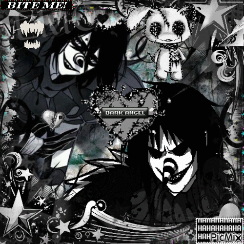
HAHAHAHAHAHAHA ♠ dark angel ♠e filme de terror?? sou viciado!! me recomenda um aí nos comentários (os mais bizarros têm prioridade) \m/
★ Blog: Min Yoongi é tudo ★
sim, emo ouve kpop e daí?? ò_ó o BTS é o meu grupo favorito e o Min Yoongi (Suga) é o meu bias, ponto final. tem coisa mais fofa q aquele jeitão de quem ñ quer papo, mas é um doce?? e o cabelo menta dele, SOCORRO <3
o Yoongi rima de um jeito q me dá arrepio, e ainda produz as próprias músicas. quando eu quero algo mais pesado, vou de Agust D (Daechwita é demais!!). sou ARMY e ñ tenho vergonha ★
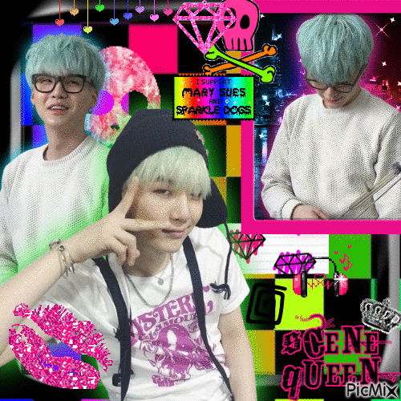
mix scene queen do meu Yoongi ~*~ rawr!!✝ Blog: Kuroshitsuji ✝
eu sou viciado em Kuroshitsuji e ñ tem cura. o Sebastian é o mordomo perfeito: faz TUDO, com aquele sorrisinho sarcástico, e ainda por cima é um demônio (????). o Ciel com aquela cara de poucos amigos e o contrato dos dois... é tão sombrio e elegante q eu fico olhando a tela sem piscar.
Inglaterra vitoriana, casarão, chá, mistério e um pezinho no inferno: tudo q eu amo num lugar só. ainda quero um mordomo desses kkkk
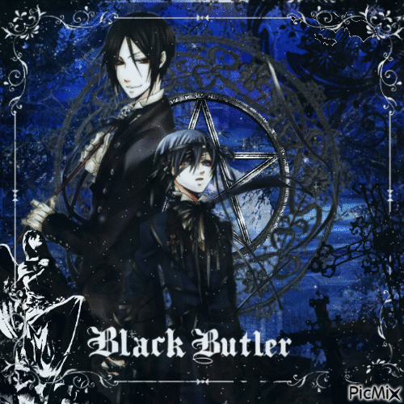
Sebastian & Ciel ✝ yes, my lord†<3 Recadinho †<3
･ﾟ✧ obrigado por passar no meu cantinho!! ✧ﾟ･
aqui é cheio de escuridão, fofura e tudo q eu amo <3
volta sempre, tá?? \m/
†彡 beijos sombrios do Yuki 彡† xoxo </3